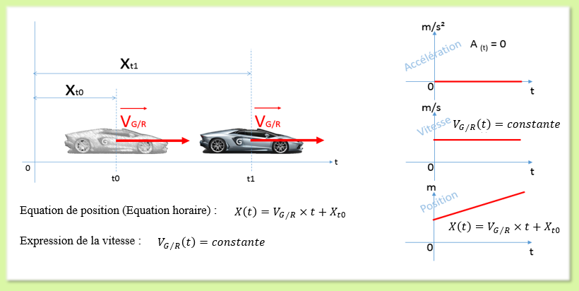
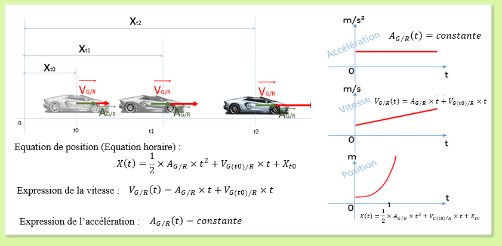
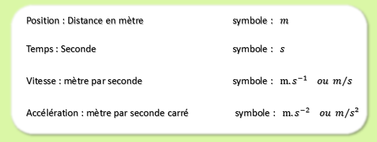

C'est un mouvement de translation rectiligne à vitesse constante.

Remarque : L'étude du mouvement du système est ramenée à l'étude du comportement de son centre de gravité "G". X(t0) représente la position du système à l'instant t0. Dans bien des cas, cette position sera prise comme position initiale du mouvement, donc X(t0)=0.
Retour en haut de la pageC'est un mouvement de translation rectiligne à accélération constante.

Remarque : L'étude du mouvement du système est ramenée à l'étude du comportement de son centre de gravité "G". X(t0) représente la position du système à l'instant t0. Dans bien des cas, cette position sera prise comme position initiale du mouvement, donc X(t0)=0. V(t0) représente la vitesse à l'instant t0, dans bien des cas, cette vitesse initiale sera nulle, donc V(t0)=0.
Retour en haut de la page
Retour en haut de la page